Slaytlar (Bilgisayar-Isletmenligi-donanim.pdf) öğrencilere gösterilir; cevaplar ve ek anlatım yalnızca bu dosyadadır.
| Hazırlık | Sınıf bilgisayarlarında bilgisayar.html açılır, üstteki 🎓 Donanım dersi düğmesine basılır. Öğrenciler kendi ekranlarında aynı adımları izler; ← → tuşlarıyla ilerlenir. Panelde “Düşünelim” sorusu ve “Cevabı göster” düğmesi vardır: önce öğrencilere düşündürün, sonra açtırın. |
|---|---|
| Akış (≈ 55 dk) | 1) Anlatım: slayt + 3B adımları birlikte (30 dk) · 2) ❓ Buldurma oyunu 3B’de (10 dk) · 3) Dersler sayfası → 4. hafta → Donanım testi: kasanın içi, 15 soru (15 dk) |
| Ana fikir | İşlemci = aşçı (beyin) · RAM = masa (geçici) · Disk = dolap (kalıcı) · Ekran kartı = ressam · Güç kaynağı = şarj aleti · Anakart = şehrin yolları |
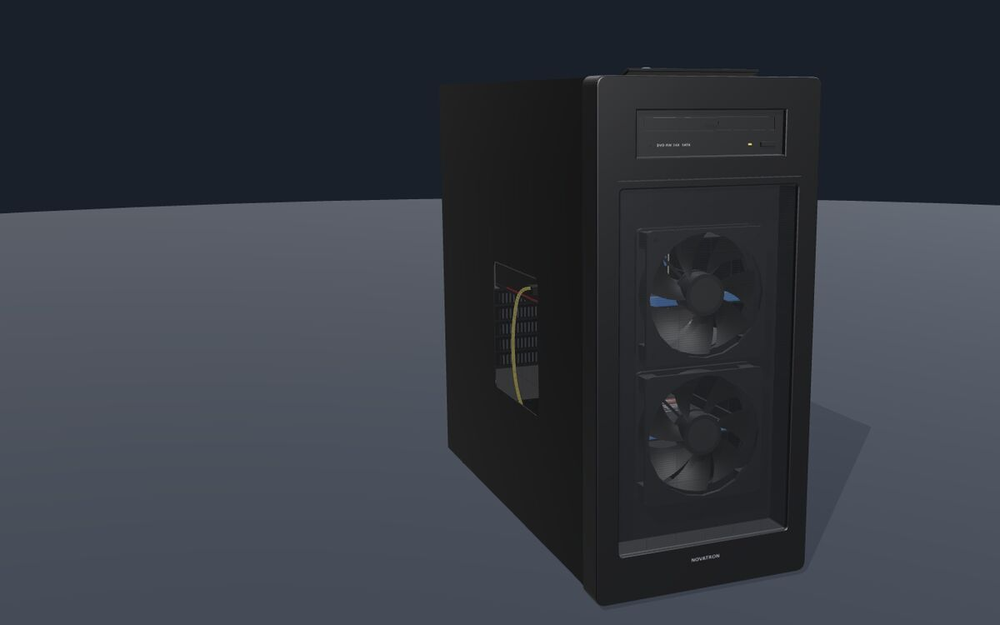
Masadaki gerçek bilgisayarı gösterin: “Bu kutu kasa, asıl bilgisayar bu.” Öğrenciler çoğu zaman ekranı bilgisayar sanar.
Düşünelim: Ekran bozulursa fotoğraflar da gider mi?
Cevap: Hayır. Ekran sadece gösterir; fotoğraflar kasanın içinde saklıdır.
Dikkat: “Bilgisayar” denince ekran değil kasa kastedilir.
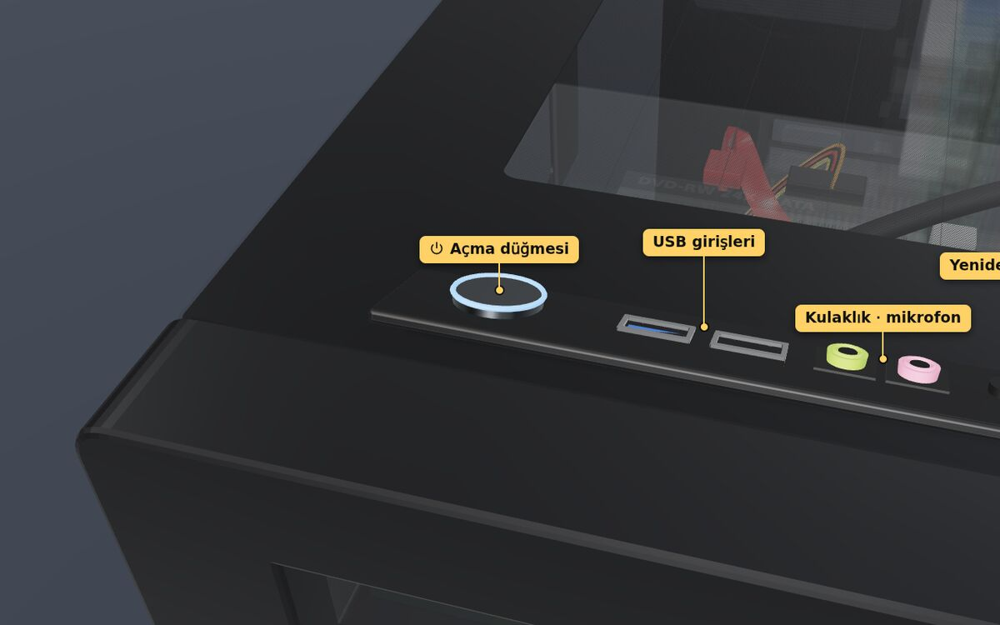
Sınıftaki kasalarda açma düğmesinin yerini öğrencilere buldurun; her kasada farklı yerdedir.
Düşünelim: Bilgisayar dondu, fare de klavye de çalışmıyor. Ne yaparsınız?
Cevap: Önce 1–2 dakika beklenir. Düzelmezse açma düğmesine 5–10 saniye basılı tutulur; bilgisayar kapanır. Kaydedilmemiş işler gider, bu yüzden son çaredir. Normalde Başlat → Güç → Kapat kullanılır.
Dikkat: Kısa basmak açar; uzun basılı tutmak zorla kapatır.
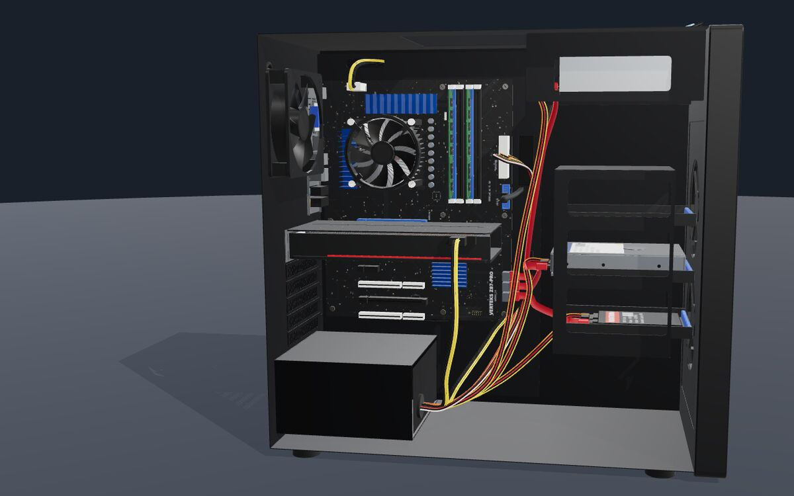
Statik elektrik: halıda yürüyüp kapı koluna dokununca çarpan elektrik, parçaları bozabilir. Önce bir metale dokunulur.
Düşünelim: Kasayı açmadan önce ilk ne yapılır?
Cevap: Bilgisayar kapatılır, fişi çekilir. Parçalara kenarlarından tutularak dokunulur.
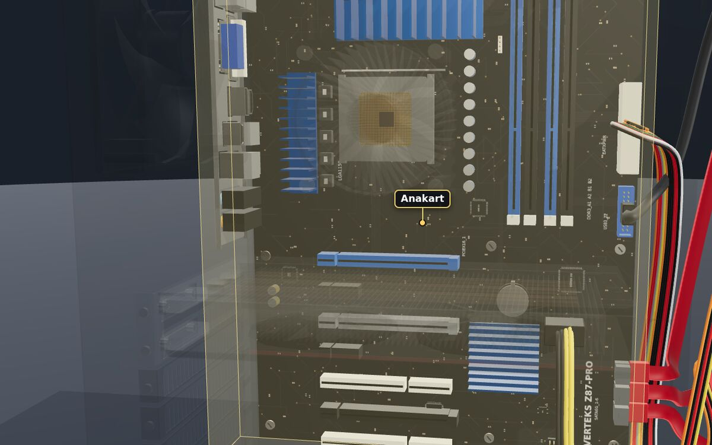
Anakart değişince çoğu zaman işlemci ve RAM de değişmek zorunda kalır; bu yüzden eski bilgisayarda anakart arızası “yeni bilgisayar al” demek olabilir.
Düşünelim: Anakart bozulursa ne olur?
Cevap: Bilgisayar çoğu zaman hiç açılmaz. İçindeki dosyalar genelde kurtarılabilir.
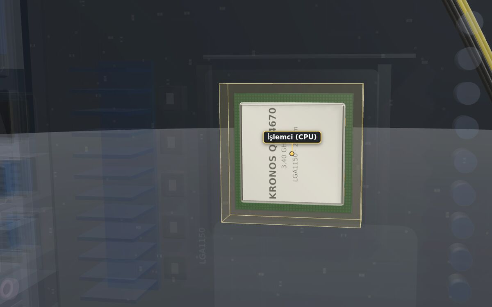
3B’de işlemcinin üstündeki soğutucu kaldırılmış hâlde görünür.
Düşünelim: Bilgisayar her işte çok yavaşsa sebebi işlemci olabilir mi?
Cevap: Evet, eski ya da zayıf işlemci yavaşlatır. Ama çoğu zaman sorun disk (eski HDD) ya da az RAM’dir; önce onlara bakılır.
Dikkat: İşlemci = CPU. Kasanın kendisine “işlemci” denmez.
Okuma örneği: Intel Core i5-4590 → i5 sınıf, tireden sonraki ilk sayı 4 → 4. nesil (2014 civarı). i5-12400 → tireden sonra 12 → 12. nesil (2022 civarı). Nesil numarası iki basamaklı olabilir (10, 11, 12, 13, 14). AMD’de Ryzen 5 5600 → Ryzen 5 sınıf (≈ i5), ilk rakam 5 → 5000 serisi. Sondaki harfler: U = dizüstü, tasarruflu; H = dizüstü, güçlü; K = masaüstü, en güçlü sürüm. Derste gösterilen 2010’lar bilgisayarı 2014 dönemi, yani tam bir “4. nesil” dönemi bilgisayardır. 2024’ten sonra Intel yeni adlar kullanıyor (Core Ultra 5, 7, 9); mantık aynı: sayı büyüdükçe daha güçlü.
Düşünelim: “i7, 4. nesil” mi, “i5, 12. nesil” mi daha hızlı?
Cevap: Büyük ihtimalle i5, 12. nesil. Arada yaklaşık 8 yıl var. Kural: önce nesle, sonra sınıfa bakılır.
Dikkat: GHz’e tek başına bakmak yanıltır; farklı nesilleri GHz ile karşılaştırmayın.
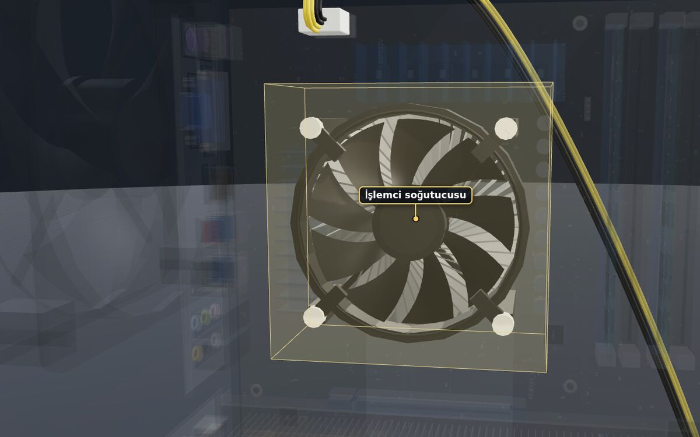
Bilgisayar kendi kendine kapanıyorsa ilk şüphelilerden biri ısınmadır (toz, kapalı hava delikleri).
Düşünelim: Dizüstüyü yorganın üstünde kullanırsak ne olur?
Cevap: Hava delikleri kapanır, ısınır. Önce yavaşlar, çok ısınırsa kendiliğinden kapanır.
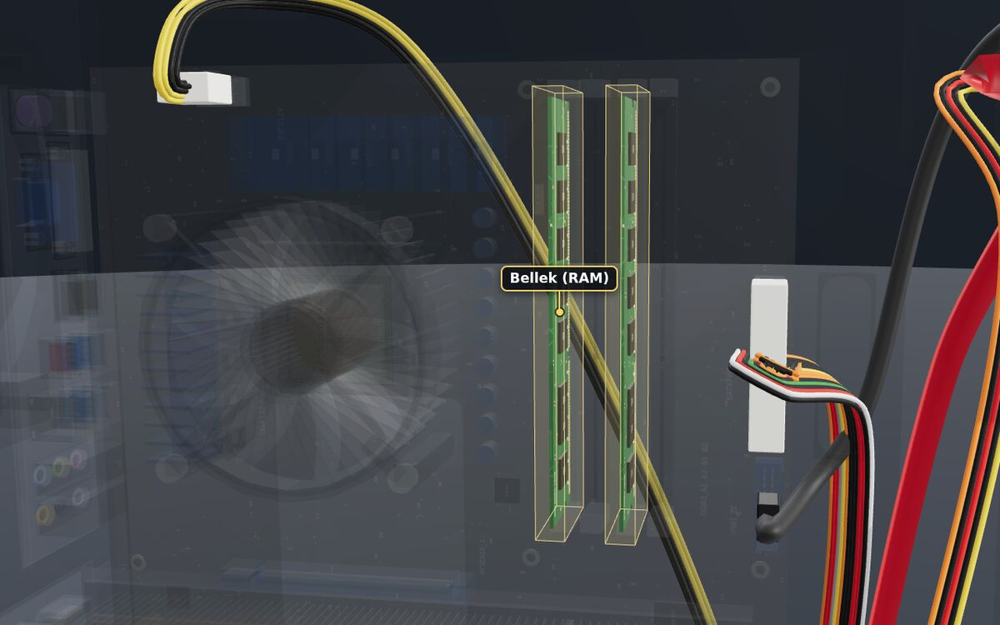
Bugün için öneri: internet ve ofis işi 8 GB ile döner, rahat çalışmak için 16 GB. Tarayıcıda çok sekme açmak RAM’i doldurur.
Düşünelim: Elektrik kesildi, kaydetmediğiniz yazı kayboldu. Neden?
Cevap: Yazı RAM’deydi (masada); diske (dolaba) kaydedilmemişti. Elektrik gidince RAM boşaldı. Sık sık Ctrl + S.
Dikkat: En sık karışan konu: “RAM’i büyük bilgisayara daha çok fotoğraf sığar” yanlış. Fotoğraf diske sığar.
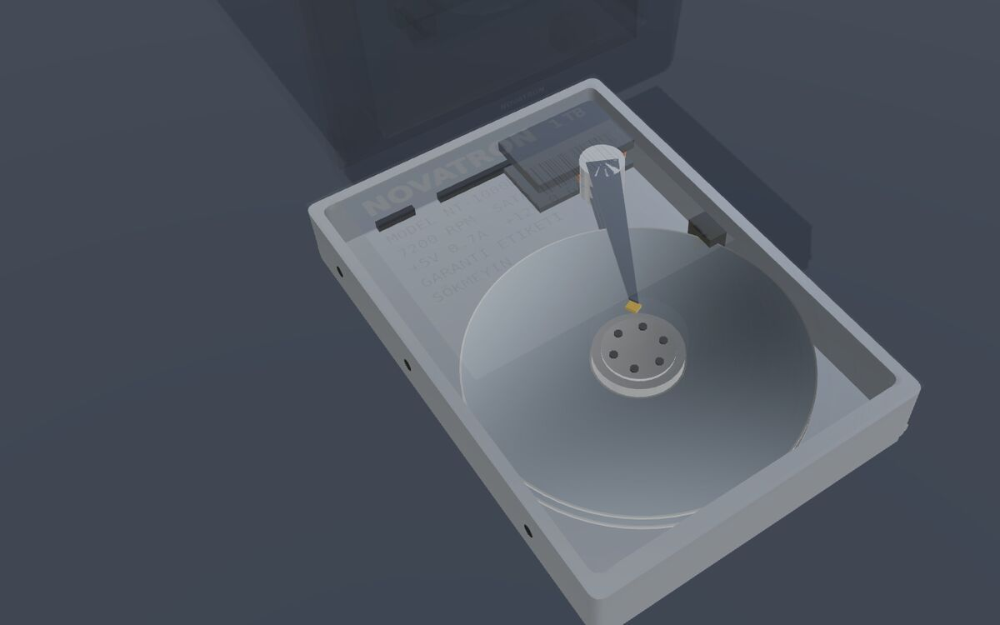
3B’de diskin kapağı soluklaşır, içindeki plakanın döndüğü ve kolun hareket ettiği görünür. 1 TB yaklaşık 250 bin telefon fotoğrafı eder.
Düşünelim: Çalışan kasaya çarparsanız hangi parça zarar görebilir?
Cevap: Dönen disk (HDD): okuyan kol plağa çarpıp çizebilir, dosyalar kaybolabilir.
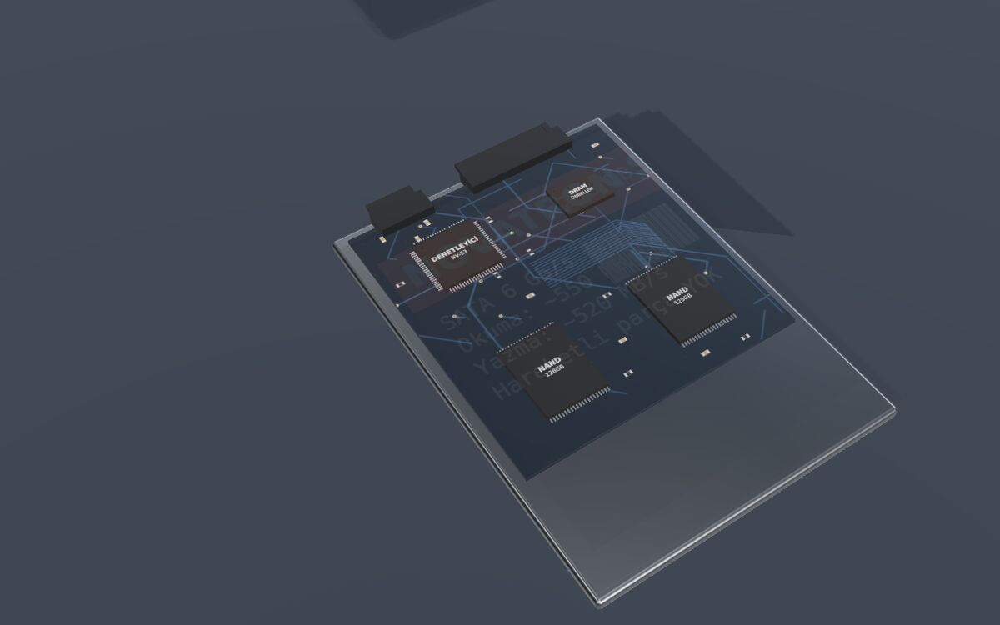
Öğrencilerin evdeki eski bilgisayarları için en ucuz ve en etkili yükseltme budur; ilanlarda “SSD” yazıp yazmadığına bakmalarını söyleyin.
Düşünelim: Eski bilgisayar çok geç açılıyor. Ne en çok işe yarar?
Cevap: Eski disk yerine SSD taktırmak.
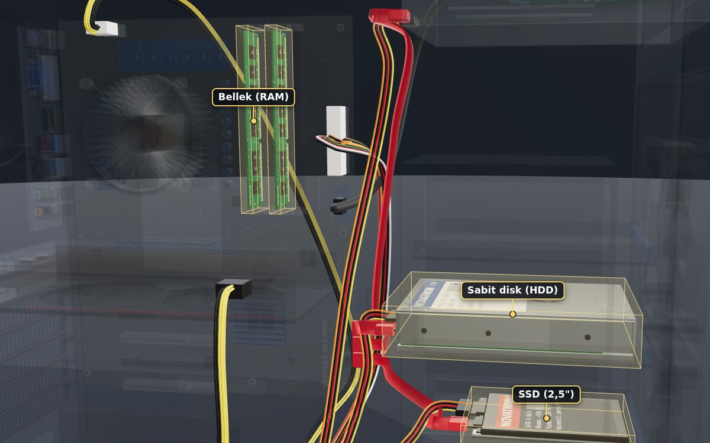
Tahtaya iki sütun çizin: MASA / DOLAP. Öğrencilere “şunu nereye koyarsınız?” diye sorun: açık Word belgesi (masa), tatil fotoğrafları (dolap), çalışan internet tarayıcısı (masa), kurulu program (dolap).
Düşünelim: “Disk dolu” uyarısı: RAM mi gerekir, disk mi?
Cevap: Disk (dolap dolmuş): gereksiz dosyalar silinir ya da büyük disk takılır. RAM, çok program açınca yavaşlama varsa artırılır.
Dikkat: Telefonlarda da aynı ayrım vardır: “4 GB RAM, 128 GB depolama”.
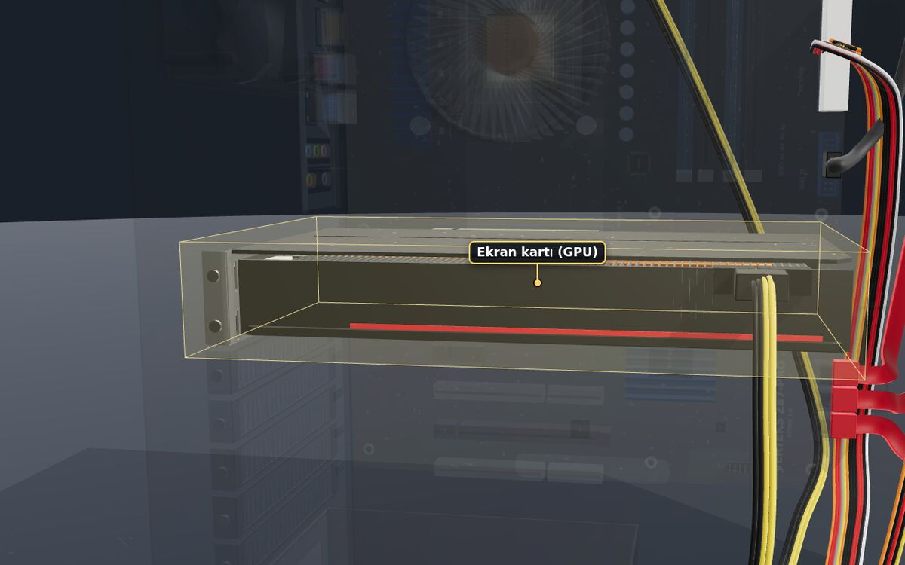
Çoğu ofis bilgisayarında ayrı ekran kartı yoktur; işlemcinin içindeki küçük grafik birimi bu işi yapar. Ayrı kart varsa ekran kablosu ona takılmalıdır (alttaki girişler).
Düşünelim: Işık yanıyor, fan dönüyor ama ekranda görüntü yok. Neye bakarsınız?
Cevap: Ekranın fişine ve düğmesine; sonra ekran kablosunun iki ucunun da tam takılı olduğuna.
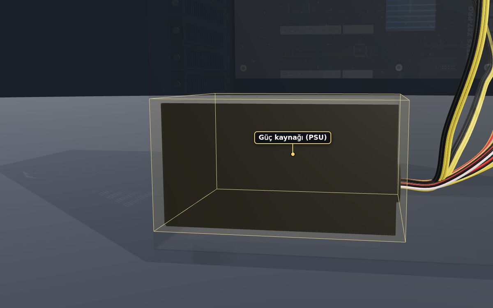
Teknik bilgi (sorulursa): prizdeki 220 voltu 12 ve 5 volta çevirir. Üzerindeki watt değeri verebileceği en fazla güçtür; bilgisayar her an o kadar harcamaz. 3B’deki “Ne kadar elektrik harcıyor?” düğmesi bunu gösterir.
Düşünelim: Elektrik sık kesiliyorsa bilgisayar nasıl korunur?
Cevap: Kesintisiz güç kaynağı (UPS): elektrik gidince birkaç dakika çalıştırır; iş kaydedilip kapatılır.
Dikkat: Güç kaynağının içi asla açılmaz; fiş çekili olsa da içinde elektrik kalabilir.
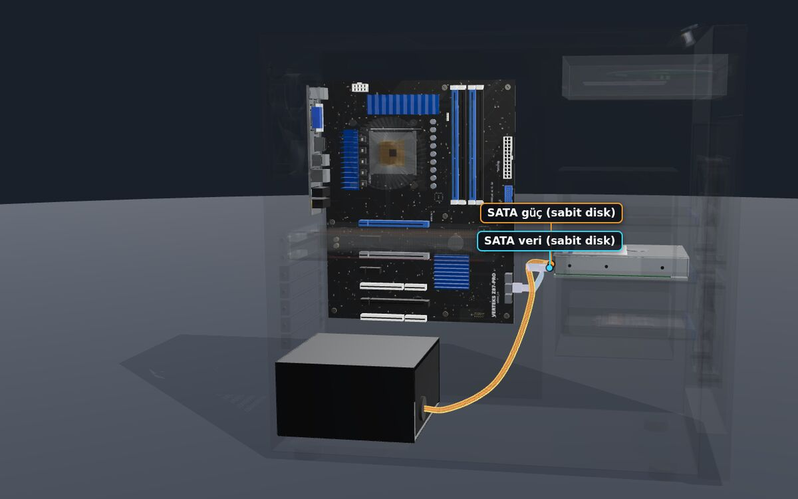
Renkler 3B uygulamanın gösterimidir; gerçek kablolar farklı renkte olabilir.
Düşünelim: Yalnızca elektrik kablosu takılıysa disk görünür mü?
Cevap: Görünmez. Disk çalışır ama bilgi kablosu olmadan bilgisayar ona ulaşamaz.
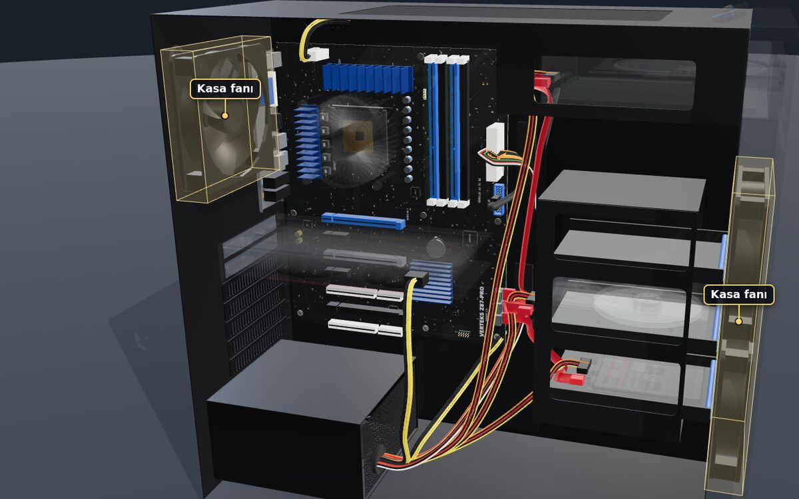
Yılda bir toz temizliği yeterlidir. Elektrik süpürgesi kasanın içine sokulmaz (statik elektrik).
Düşünelim: Fan sesi eskisinden çok daha fazla. Ne olabilir?
Cevap: Toz birikmiş olabilir; fiş çekiliyken temizletilir. Kasa duvara dayanmaz.
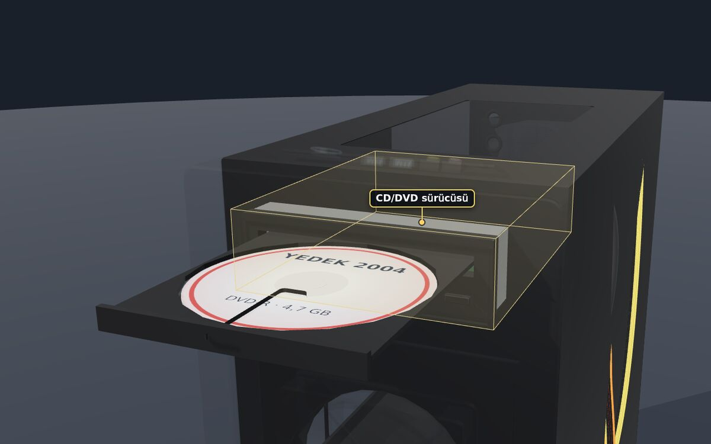
Eski düğün, sünnet DVD’lerini bilgisayara ve USB belleğe kopyalamalarını önerin; diskler yıllar içinde bozulabilir.
Düşünelim: DVD yeri olmayan bilgisayarda eski DVD nasıl izlenir?
Cevap: USB ile takılan ayrı bir DVD sürücüsü alınır.
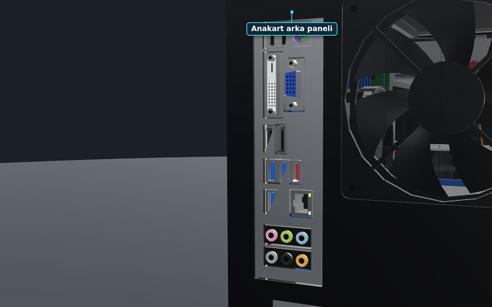
3B’de herhangi bir girişe tıklanınca adı ve görevi yazar; öğrencilere birkaç tanesini tıklatın.
Düşünelim: USB bellek girmiyor. Ne yaparsınız?
Cevap: Zorlamadan ters çevirip yeniden denenir.
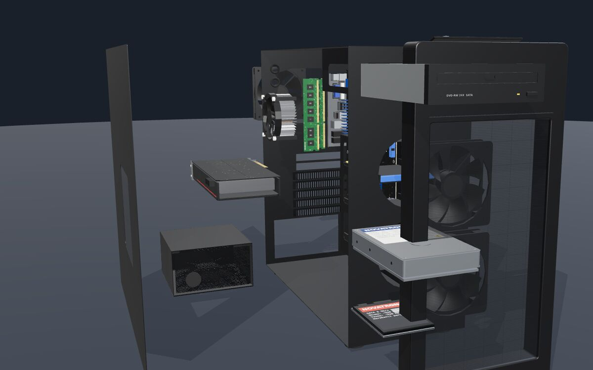
Alttaki “Parçaları ayır” kaydırıcısıyla parçaları toplayıp ayırın.
Düşünelim: Hangi parça olmadan bilgisayar hiç açılmaz?
Cevap: Anakart, işlemci, RAM ve güç kaynağı. Disk olmadan açılır ama Windows gelmez.
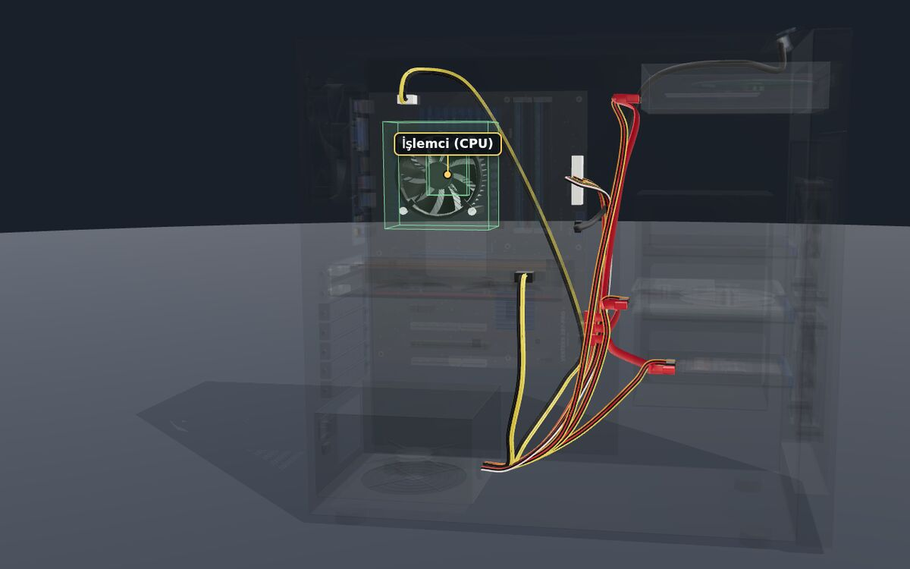
3B’de parçalar sırayla yeşil yanar: disk → RAM → işlemci → ekran kartı. Bir tur izletin, sonra öğrencilere sırayı söyletin.
Düşünelim: Kaydetmeden kapattınız. Diskte hangi hâli kalır?
Cevap: Eski hâli. Kırpılmış hâli yalnızca RAM’deydi.
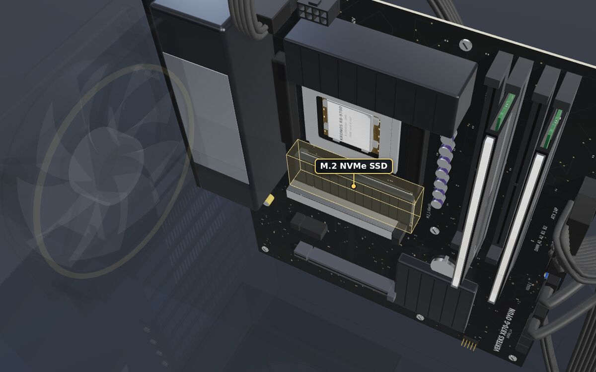
Parçalar küçüldü ama görevler aynı: beyin, masa, dolap, ressam, elektrik.
Düşünelim: Dizüstüde bu parçalar nerede?
Cevap: Klavyenin altındaki gövdede, küçültülmüş olarak; bir de pil vardır.
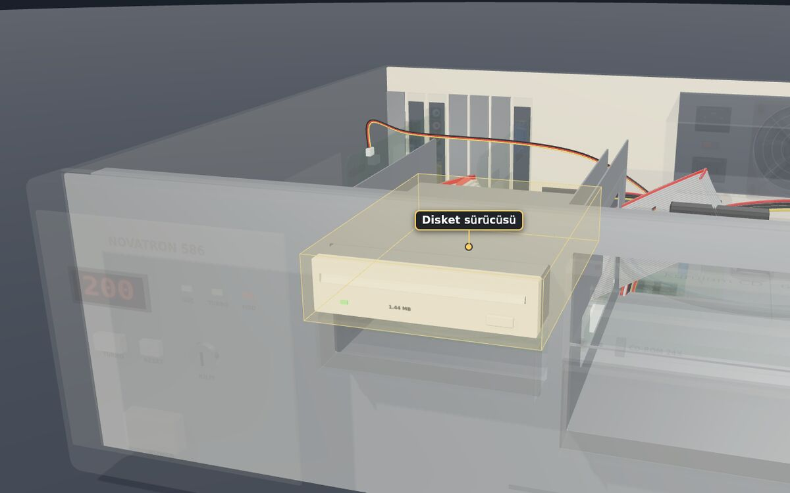
Bir disket 1,44 MB; bugünkü 1 TB’lık diske yaklaşık 700 bin disket sığar. 3B’de “Eski ve yeni diskleri karşılaştır” düğmesi gerçek boyutlarıyla yan yana gösterir.
Düşünelim: Disketin yerini ne aldı?
Cevap: USB bellek ve internet (e-posta, bulut).